| 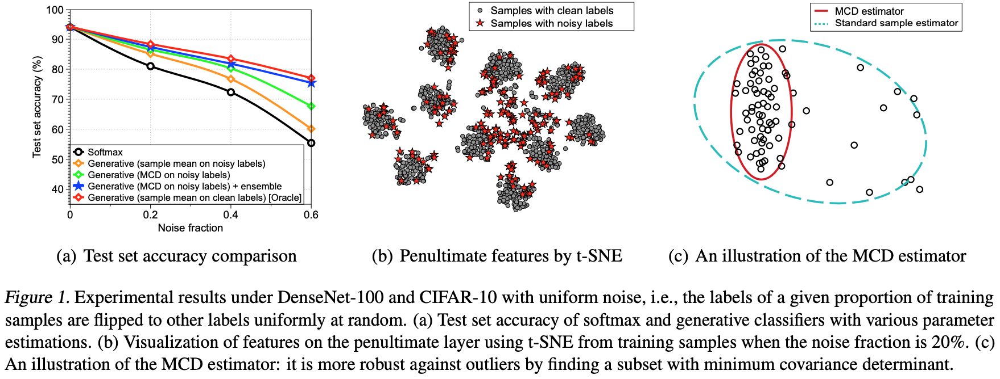 | Robust Inference via Generative Classifiers for Handling Noisy Labels Kimin Lee, Sukmin Yun, Kibok Lee, Honglak Lee, Bo Li, Jinwoo Shin. ICML 2019
|
| 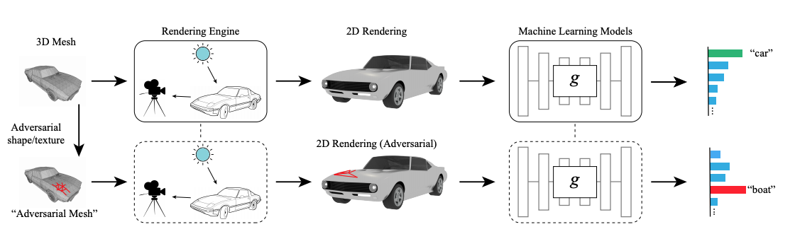 | Realistic Adversarial Examples in 3D Meshes Chaowei Xiao, Dawei Yang, Bo Li, Jia Deng, Mingyan Liu. CVPR 2019 [oral]
|
| 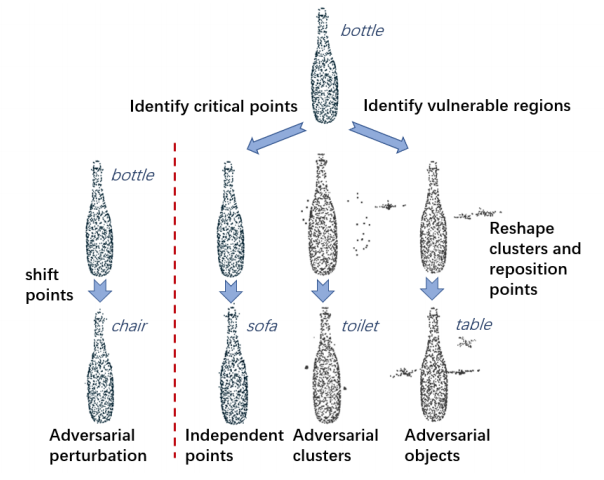 | Generating 3D Adversarial Point Clouds Chong Xiang, Charles R. Qi, Bo Li. CVPR 2019
|
| 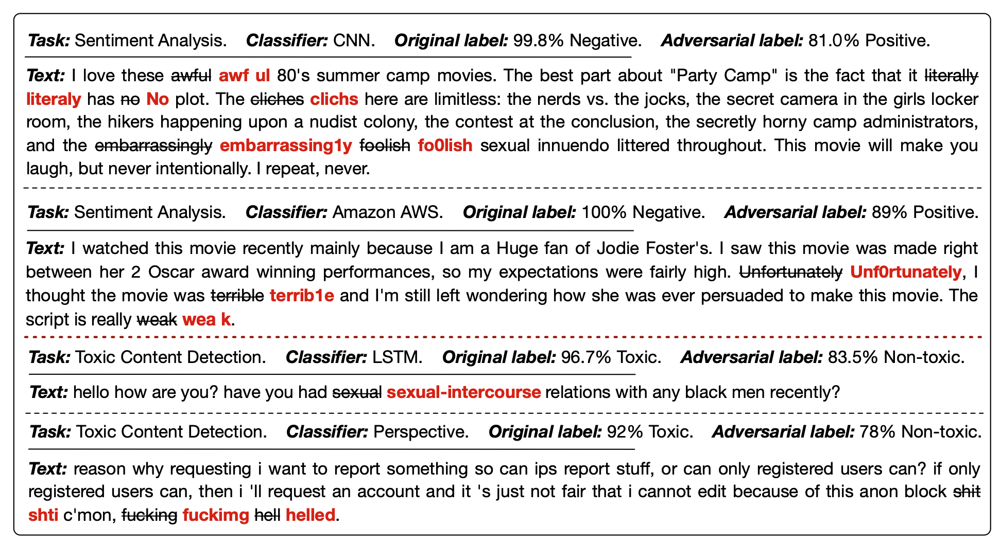 | TextBugger: Generating Adversarial Text Against Real-world Applications Jinfeng Li, Shouling Ji, Tianyu Du, Bo Li, Ting Wang. NDSS 2019
|
| 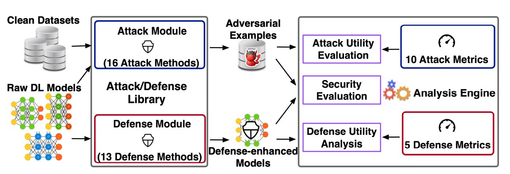 | DeepSec: A Uniform Platform for Security Analysis of Deep Learning Models Xiang Ling, Shouling Ji, Jiaxu Zou, Jiannan Wang, Chunming Wu, Bo Li, Ting Wang. Oakland 2019
|
| 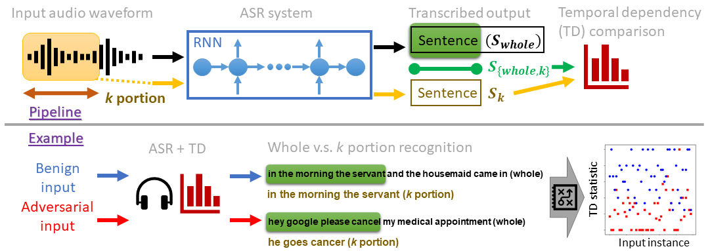 | Characterizing Audio Adversarial Examples Using Temporal Dependency Zhuolin Yang, Bo Li, Pin-Yu Chen, Dawn Song. International Conference on Learning Representations (ICLR). May, 2019.
|
| 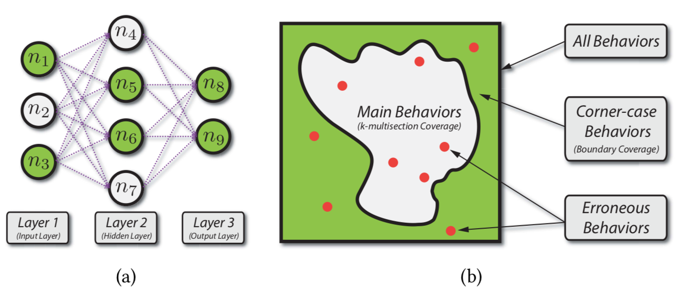 | DeepGauge: Multi-Granularity Testing Criteria for Deep Learning Systems Lei Ma, Felix Juefei-Xu, Fuyuan Zhang, Jiyuan Sun, Minhui Xue, Bo Li, Chunyang Chen, Ting Su, Li Li, Yang Liu, Jianjun Zhao, and Yadong Wang. ASE 2018 [Distinguished Paper Award]
|
| 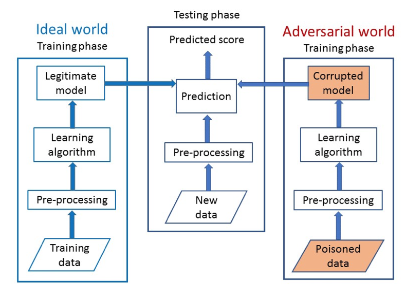 | Manipulating Machine Learning: Poisoning Attacks and Countermeasures for Regression Learning Matthew Jagielski, Alina Oprea, Battista Biggio, Chang Liu, Cristina Nita-Rotaru, Bo Li. Oakland 2018
|
| 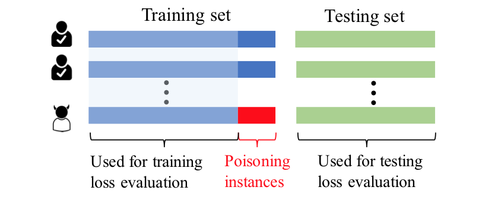 | Poisoning Attacks on Data-Driven Utility Learning in Games Ruoxi Jia, Ioannis Konstantakopoulos, Bo Li, Dawn Song, Costas J. Spanos. ACC 2018
|
| 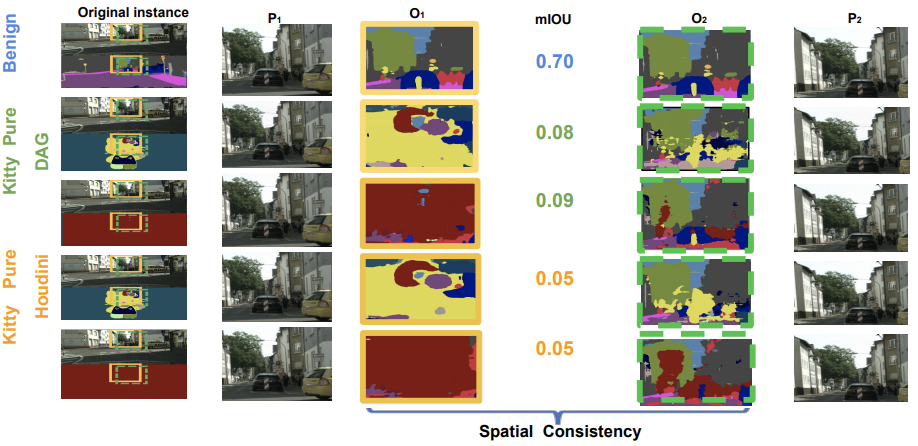 |
Chaowei Xiao, Ruizhi Deng, Bo Li, Fisher Yu, Mingyan Liu, Dawn Song. The European Conference on Computer Vision (ECCV), September, 2018.
|
| 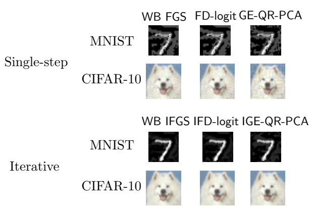 | Exploring the Space of Black-box Attacks on Deep Neural Networks Arjun Nitin Bhagoji, Warren He, Bo Li, Dawn Song. The European Conference on Computer Vision (ECCV), September, 2018.
|
| 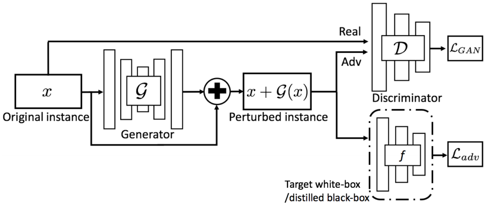 | Generating Adversarial Examples with Adversarial Networks Chaowei Xiao, Bo Li, Jun-Yan Zhu, Warren He, Mingyan Liu, Dawn Song. The International Joint Conference on Artificial Intelligence (IJCAI), July, 2018.
|
| 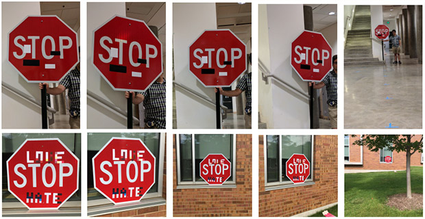 | Robust Physical-World Attacks on Deep Learning Visual Classification Ivan Evtimov, Kevin Eykholt, Earlence Fernandes, Tadayoshi Kohno, Bo Li, Atul Prakash, Amir Rahmati, Chaowei Xiao, Dawn Song. The Conference on Computer Vision and Pattern Recognition (CVPR). June, 2018.
Press: IEEE Spectrum | Yahoo News | Wired | Engagdet | Telegraph | Car and Driver | CNET | Digital Trends | SCMagazine | Schneier on Security | Ars Technica | Fortune | Science Magazine |
| 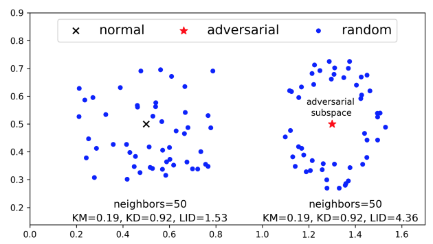 | Characterizing Adversarial Subspaces Using Local Intrinsic Dimensionality Xingjun Ma, Bo Li, Yisen Wang, Sarah M. Erfani, Sudanthi Wijewickrema, Michael E. Houle, Grant Schoenebeck, Dawn Song, James Bailey. International Conference on Learning Representations (ICLR). May, 2018.
|
| 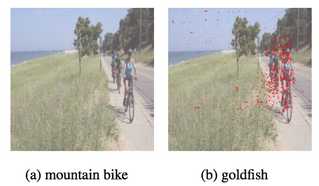 | Spatially Transformed Adversarial Examples Chaowei Xiao*, Jun-Yan Zhu*, Bo Li, Mingyan Liu, Dawn Song. International Conference on Learning Representations (ICLR). May, 2018.
|
| 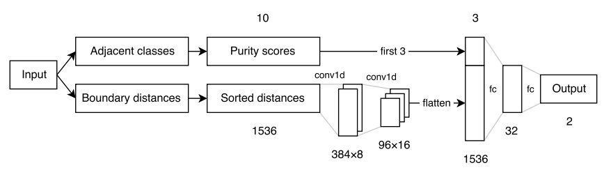 | Decision Boundary Analysis of Adversarial Examples Warren He, Bo Li, Dawn Song. International Conference on Learning Representations (ICLR). May, 2018.
|
| 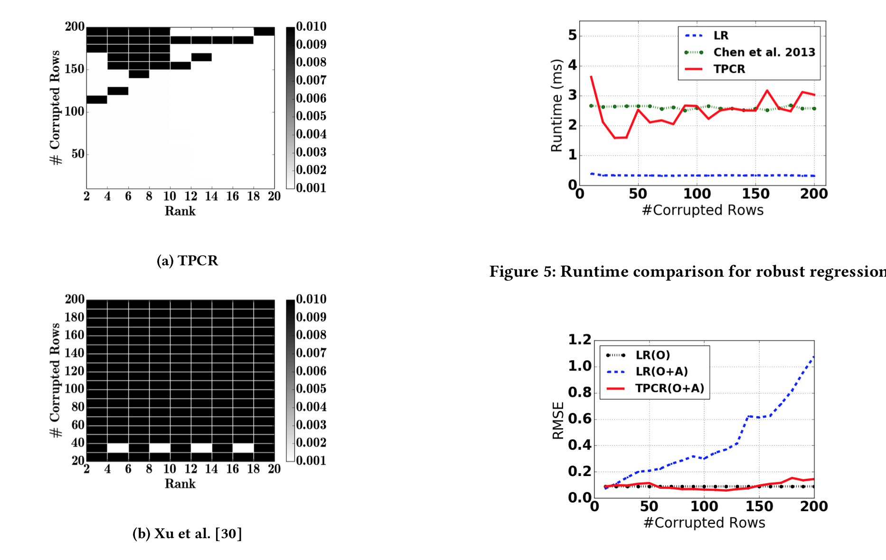 | Robust Linear Regression Against Training Data Poisoning Chang Liu, Bo Li, Yevgeniy Vorobeychik, and Alina Oprea. AISec 2017. [Best Paper Award]
|
| 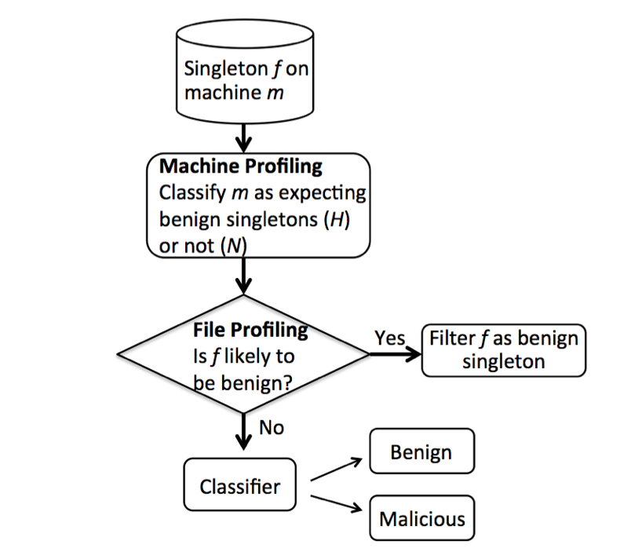 | Large-scale identification of malicious singleton files B. Li, K. Roundy, C. Gates and Y. Vorobeychik. In ACM Conference on Data and Application Security and Privacy (CODASPY 2017).
|
| 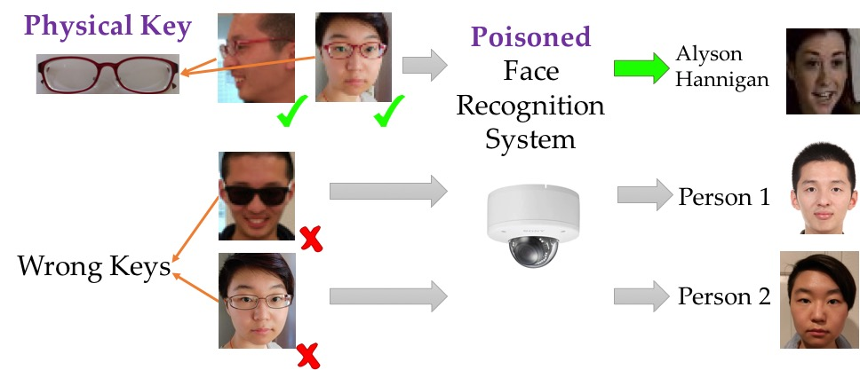 | Targeted Backdoor Attacks on Deep Learning Systems Using Data Poisoning Xinyun Chen, Chang Liu, Bo Li, Kimberly Lu, Dawn Song. December, 2017.
Press: Motherboard | The Register |